The effect of taVNS on accuracy and response time (RT) across declarative and working memory, cognitive control, and associative & skill acquisition. Bayesian random-effects (brms · bayesmeta); ACC and RT pooled separately, positive g favors taVNS.
This is a living meta-analysis: the corpus is updated and versioned as new studies are published. Browse the registered analysis in the tabs, or run your own subset with the real-R engine.
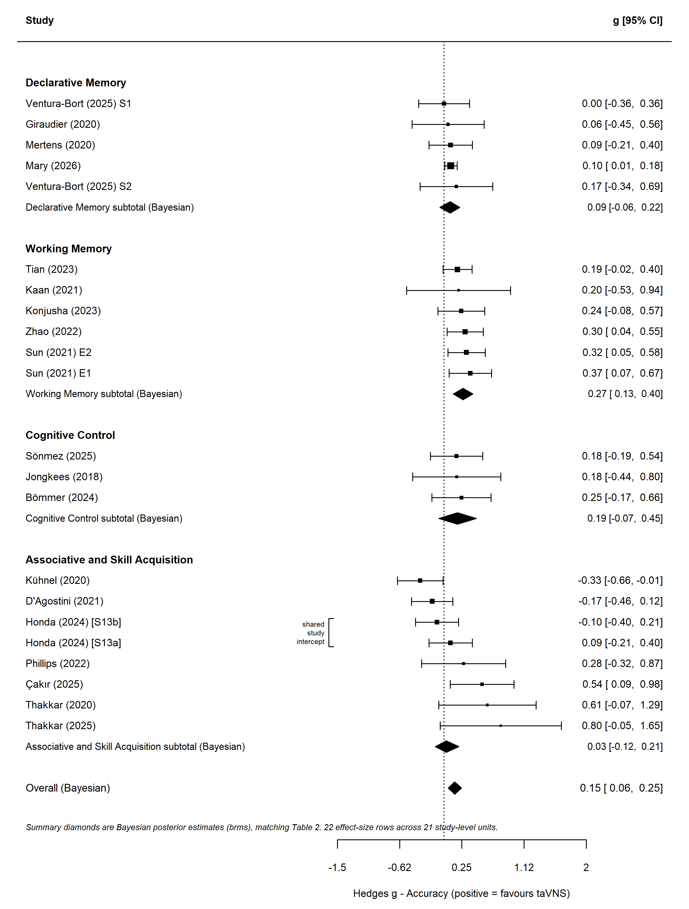
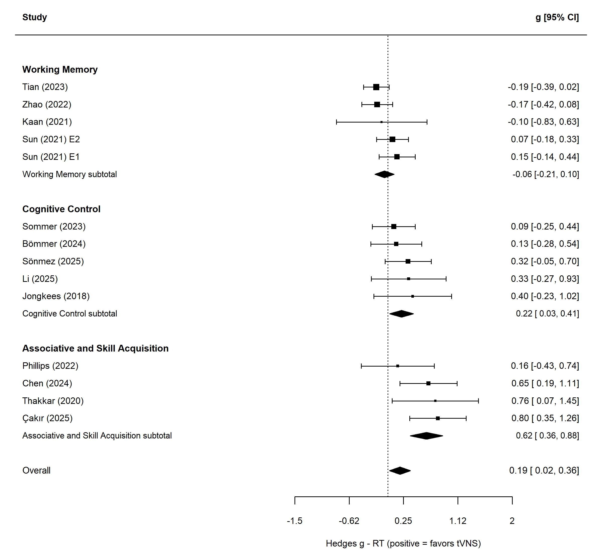
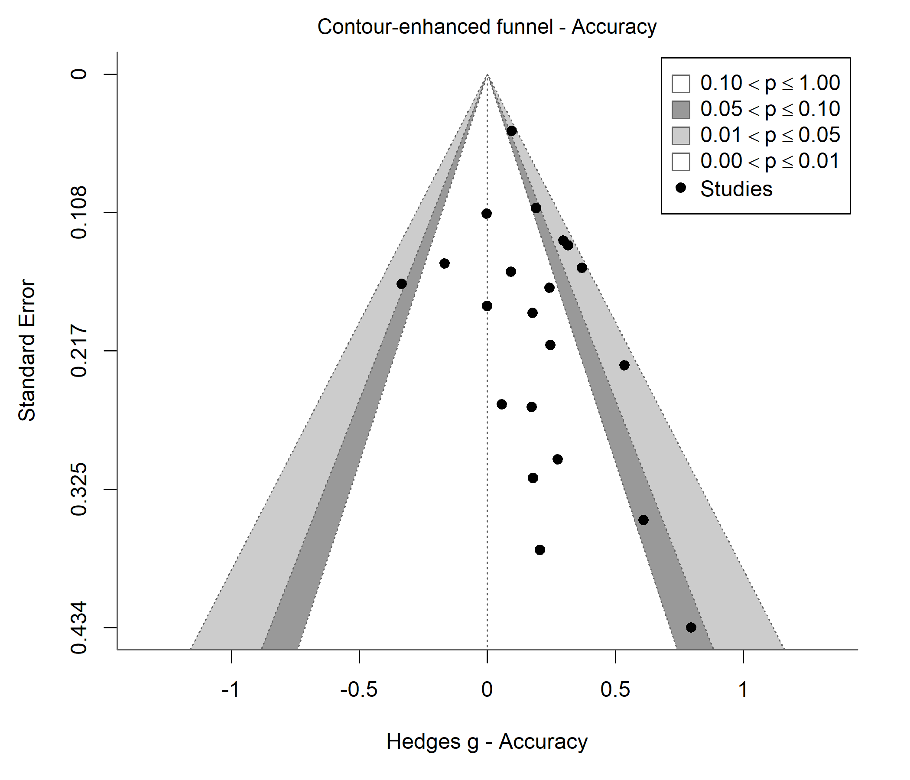
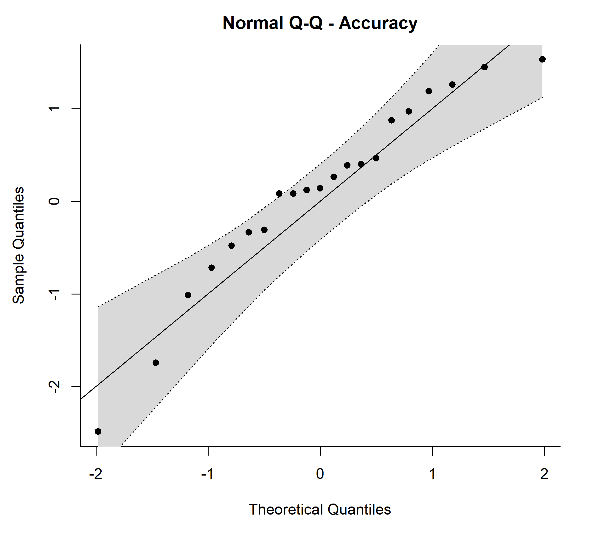
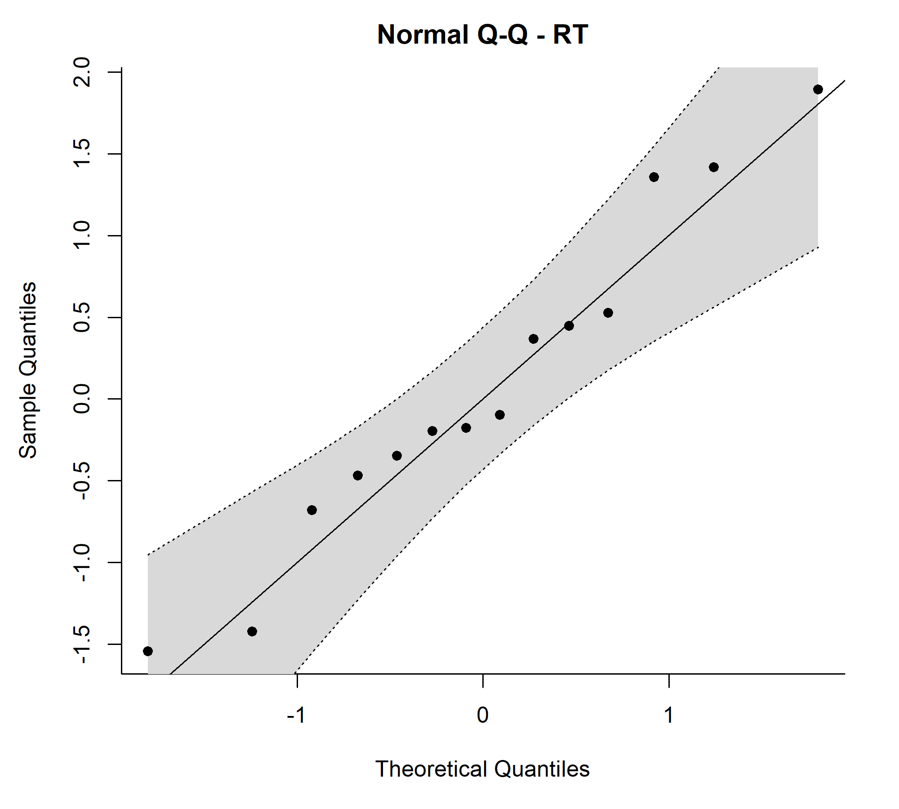
Include or exclude any publication — the forest, funnel, Q–Q and all statistics recompute for your chosen subset with real R (bayesmeta · webR) in your browser; ACC and RT are shown together, and the affected pool updates automatically after a change (~15–25 s). The first visit downloads the R runtime (~90 MB; later visits use the cache). Open full page ↗
| Outcome | Domain | k | Pooled g | 95% CrI |
|---|---|---|---|---|
| Accuracy | Declarative Memory | 5 | +0.09 | [0.01, 0.17] |
| Accuracy | Working Memory | 6 | +0.27 | [0.15, 0.38] |
| Accuracy | Cognitive Control | 3 | +0.20 | [-0.05, 0.45] |
| Accuracy | Associative & Skill Acquisition | 8 | +0.11 | [-0.14, 0.37] |
| Response time (RT) | Working Memory | 5 | -0.06 | [-0.21, 0.10] |
| Response time (RT) | Cognitive Control | 5 | +0.22 | [0.03, 0.41] |
| Response time (RT) | Associative & Skill Acquisition | 4 | +0.62 | [0.36, 0.88] |
Registered R/bayesmeta outputs; ACC and RT shown separately.
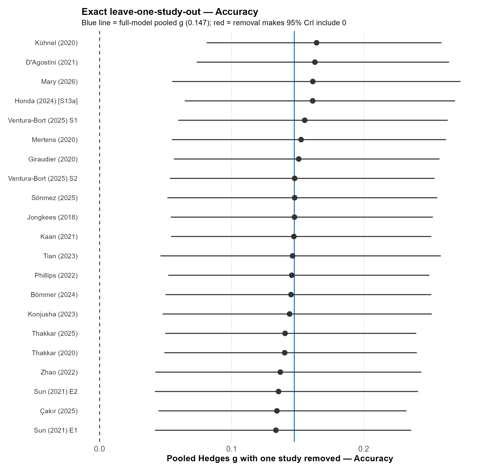
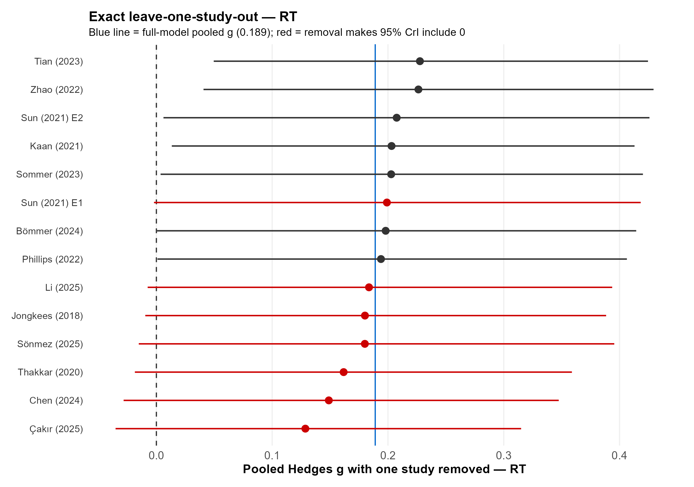
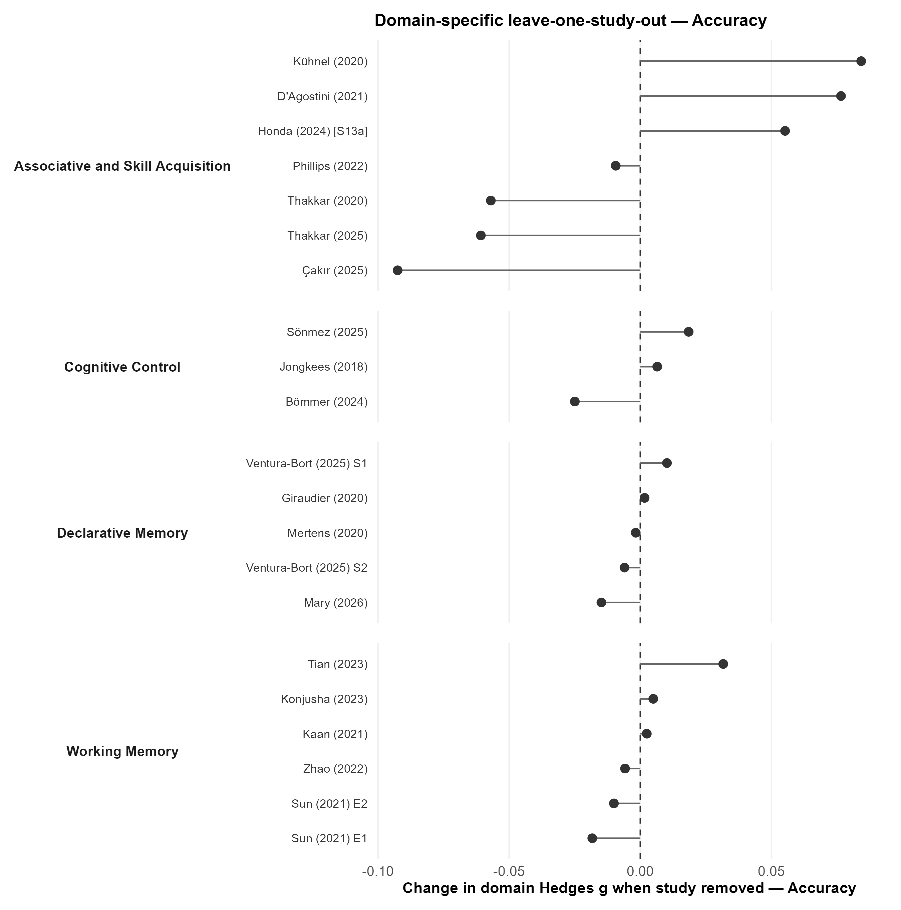
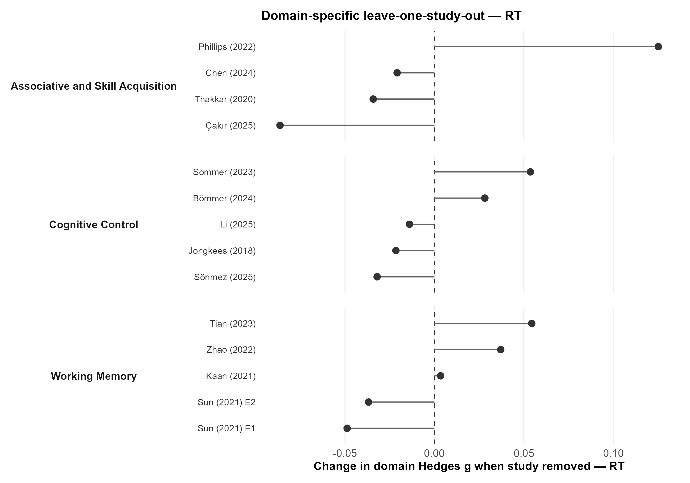
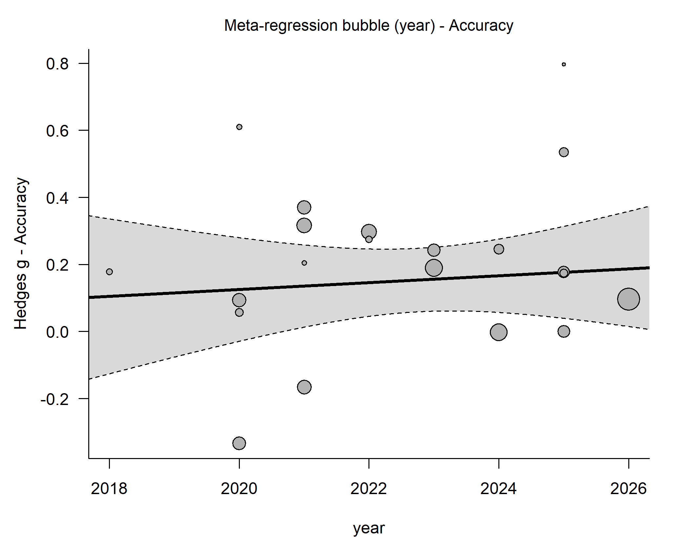
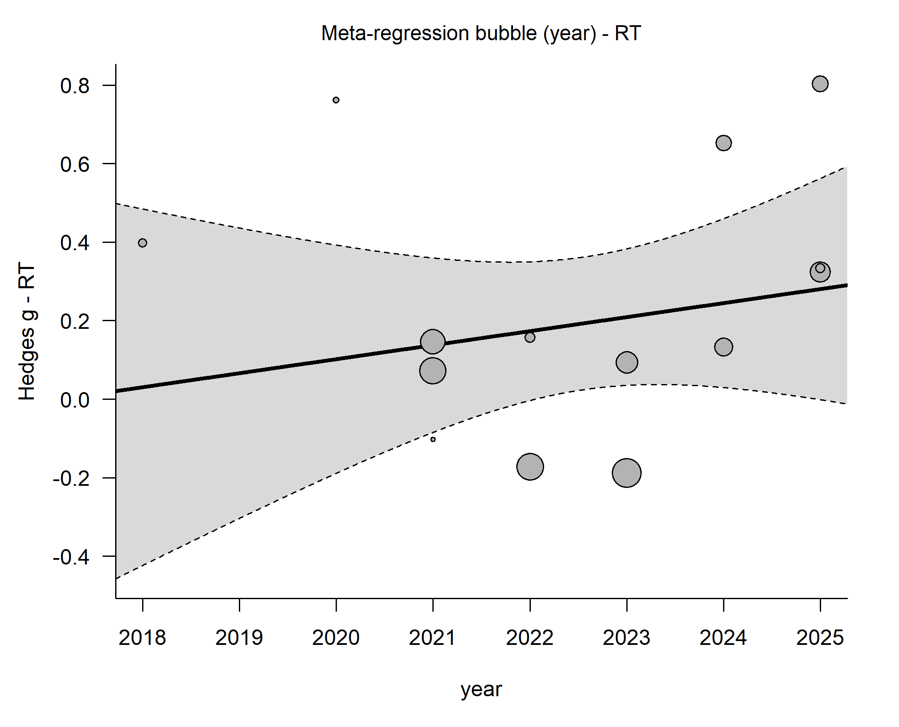
Characteristics of included studies (paper level, 22 studies). Multi-experiment papers (Sun 2021, Ventura-Bort 2025) contribute two experiments/studies; the analysis counts 24 study units. Domain = 4-category; Outcome = ACC/RT.
| Study | Year | Country | Design | Blinding | N | Age (M) | %F | Domain | Outcome |
|---|---|---|---|---|---|---|---|---|---|
| Jongkees 2018 | 2018 | Netherlands/Australia/Germany | Between | Single | 40 | 22 | 80 | Cognitive Control | RT,ACC |
| Giraudier 2020 | 2020 | Germany | Between | Single | 60 | Declarative Memory | ACC | ||
| Kühnel 2020 | 2020 | Germany | Within | Single | 39 | 26 | 59 | Associative & Skill | ACC |
| Mertens 2020 | 2020 | Belgium | Within | Single | 41 | 22 | 51 | Declarative Memory | ACC |
| Thakkar 2020 | 2020 | USA | Between | Single | 37 | 21 | 73 | Associative & Skill | RT,ACC |
| D'Agostini 2021 | 2021 | Belgium | Between | Single | 71 | 23 | 77 | Associative & Skill | ACC |
| Kaan 2021 | 2021 | USA | Between | Single | 62 | 20 | 66 | Working Memory | RT,ACC |
| Sun 2021 | 2021 | China | Within | Single | 46 | Working Memory | RT,ACC | ||
| Phillips 2022 | 2022 | USA | Between | Double | 45 | 22 | 64 | Associative & Skill | RT,ACC |
| Zhao 2022 | 2022 | China | Within | — | 63 | 21 | 52 | Working Memory | RT,ACC |
| Konjusha 2023 | 2023 | Germany | Within | Single | 37 | 25 | Working Memory | ACC | |
| Sommer 2023 | 2023 | Germany | Within | Single | 32 | 26 | 59 | Cognitive Control | RT |
| Tian 2023 | 2023 | China | Within | Single | 93 | Working Memory | RT,ACC | ||
| Bömmer 2024 | 2024 | Germany | Within | Double | 27 | 25 | 48 | Cognitive Control | RT,ACC |
| Chen 2024 | 2024 | China | Within | Single | 22 | 23 | 46 | Associative & Skill | RT |
| Honda 2024 | 2024 | Canada | Between | Double | 45 | 23 | 73 | Associative & Skill | ACC |
| Li 2025 | 2025 | China | Within | Single | 61 | Cognitive Control | RT | ||
| Sönmez 2025 | 2025 | Germany | Within | Single | 29 | 25 | 51 | Cognitive Control | RT,ACC |
| Thakkar 2025 | 2025 | USA | Within | Single | 35 | 20 | Associative & Skill | ACC | |
| Ventura-Bort 2025 S1 | 2025 | Germany | Within | Single | 30 | 21 | 87 | Declarative Memory | ACC |
| Çakır 2025 | 2025 | Türkiye | Between | Single | 80 | Associative & Skill | RT,ACC | ||
| Mary 2026 | 2026 | Belgium | Within | Single | 89 | 24 | 52 | Declarative Memory | ACC |
Note: these means come from the joint model over the 11 matched studies only, so they differ from the full-corpus pools (accuracy g = 0.15, RT g = 0.18). 11/24 studies matched; the rest reported accuracy or RT only and could not be paired.
| Domain | k | Accuracy g [95%] | RT g [95%] |
|---|---|---|---|
| Working Memory | 5 | +0.27 [0.12, 0.42] | −0.06 [−0.23, 0.13] |
| Cognitive Control | 3 | +0.19 [−0.09, 0.45] | +0.24 [−0.05, 0.54] |
| Associative & Skill Acquisition | 3 | +0.43 [0.10, 0.74] | +0.52 [0.18, 0.86] |
Working memory shifts toward "more accurate but slightly slower"; associative/skill learning shows the strongest dual benefit.
The registered model runs in R / brms · bayesmeta; the real-R engine (bayesmeta · Shiny/webR) is embedded on this page and matches the registered model within ~0.01.